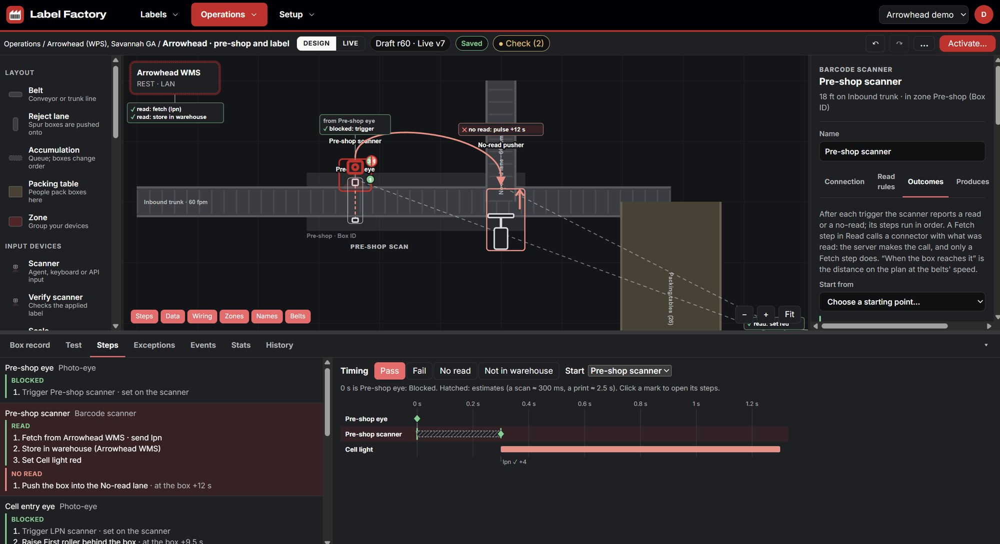

Label Factory SLAM
Run the labeling on your conveyor lines from one place. SLAM reads each box as it passes, looks up its order in your WMS or ERP, prints and applies the right label, checks it, and sends anything wrong down the reject lane.
SLAM runs on a server at your plant. Nothing on the line needs the internet.
Draw the line the way it's built
Lay out belts, zones and packing tables to scale, then place each scanner, printer, photo-eye and pusher where it sits on the floor. Belt length and speed tell SLAM how long a box takes to get from one device to the next.
Each device has steps for what happens when it fires: a photo-eye triggers the scanner, a read fetches the order from your WMS, a no-read pushes the box into the no-read lane. The timing chart shows how long each step takes.
Changes are drafts until you make them live, and every live version is kept.


What happens to each box
-
Scan
A scanner reads the box ID as it passes. A box nobody can read is pushed off to a no-read lane instead of going on unlabeled.
-
Look up
SLAM fetches the order, packing slip and shipping label data from your WMS or ERP before the box reaches the printer. It keeps a copy, so a slow WMS doesn't stop the line.
-
Label and apply
The printer at the labeling cell prints that box's label as it arrives. A label is only printed for the box that was just read, never a guess.
-
Verify and manifest
A verify scanner reads the box and its new label together. A match goes on to shipping and is recorded. A mismatch goes to the reject lane and the exceptions list.
Every read, lookup, print and verify is kept, so you can trace any box, see the line's throughput and timing, and work through the exceptions.
How it fits together
One SLAM server runs the lines. Agents on PCs along the conveyor talk to the devices. Your business systems stay where they are.
Your systems
At your plant
- Line designer and dashboards
- Line runtime: decides each box's label
- Order data copy and tracking history
- Label library
On the line
- Barcode scanners
- Print-and-apply printer
- Verify scanner
- I/O module: photo-eyes, pushers, stack lights
- Label and document printers
- Scale
- Hand scanner
Agents keep timing and safety on the line: they trigger devices, hold events until the server has them, and stop a printer that would miss its box. Decisions about content stay on the server.
Planning a line?
Tell Chicago Coding Systems about your conveyor, your devices and the systems your order data lives in.
Contact Chicago Coding Systems